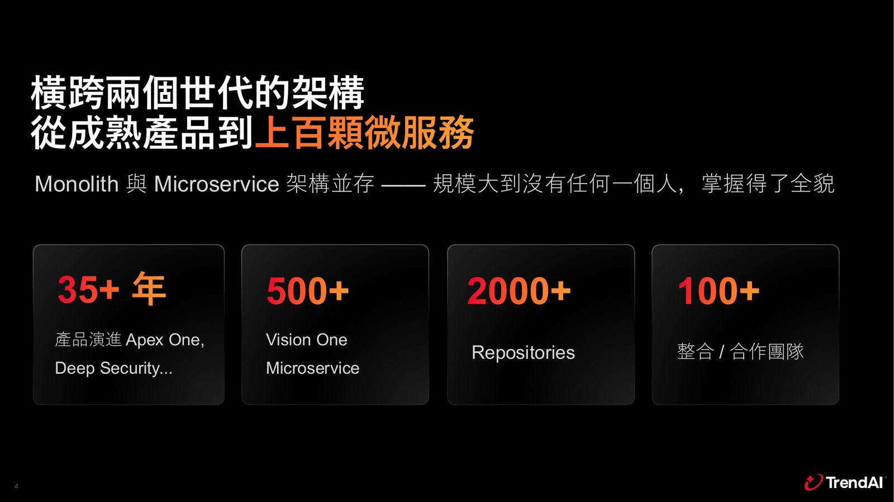
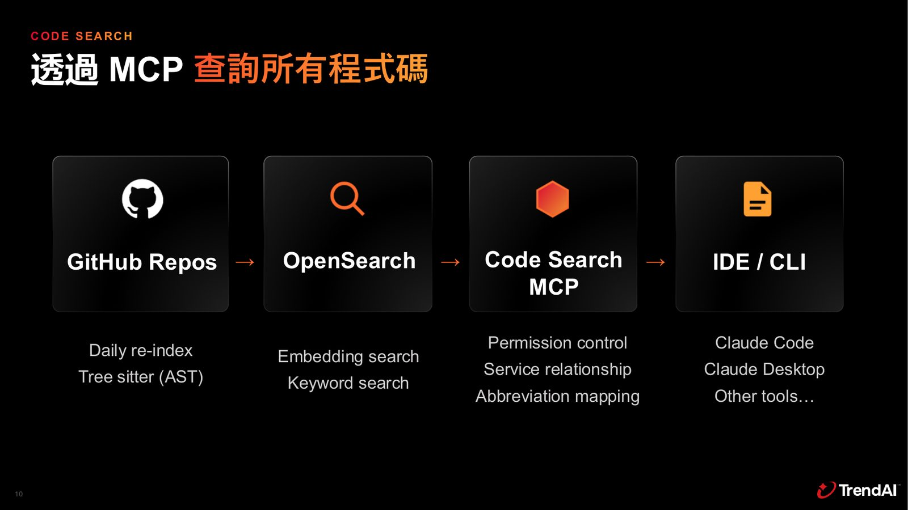
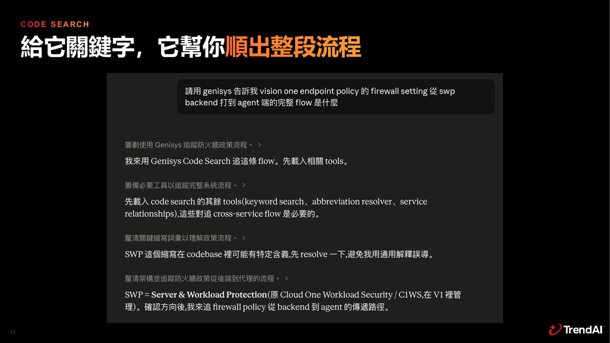
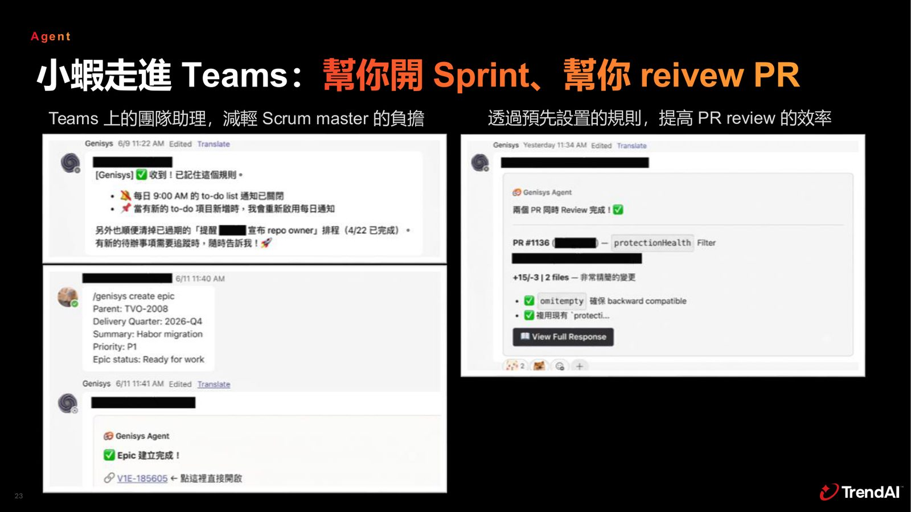

摘要
本講題針對擁有 35 年以上歷史、橫跨 Monolith 與 500 多個微服務架構的龐大程式庫，指出企業 AI 落地之瓶頸不在於工具，而是在於如何餵養企業知識的「上下文工程（Context Engineering）」。為此，趨勢科技打造了 Genisys 五層平台架構。技術亮點包含：自建 Code Search MCP，以 Tree-sitter AST 解析程式碼並結合 OpenSearch 進行語意與關鍵字檢索，每月成本僅 200 美元；建立 Service Map，融合靜態分析（Protobuf/API）與動態日誌分析，繪製真實微服務流量拓樸。在此地基上部署 AI 助理 Shrimp，進駐 Teams 進行 Sprint 管理，並藉由雙 Agent 協作（Triage/Investigation）處理 Support Case。實務啟示為：企業應優先整理知識斷點、打破代碼庫藩籬，從最痛的程式理解與漏洞修補下手，方能發揮 AI 規模化效益。
重點整理
- 公司擁有35年以上產品演進、500+微服務、2000+ repositories、100+整合合作團隊，規模龐大導致AI落地最大瓶頸在於「餵知識」而非工具本身（Context Engineering）。
- 自建 Code Search MCP：以 Tree-sitter AST 解析程式碼、寫入 OpenSearch，結合 embedding 與 keyword 搜尋並加上權限控管，供 IDE、Claude Code、Claude Desktop 等工具查詢，日活躍使用者250+，每月索引成本僅約200美元。
- 打造基於 Claude Code Skills 的 AI SDLC Orchestrator，涵蓋需求釐清、設計、實作、驗證、部署五階段；但曾因名稱對應不全、缺乏設計指引、系統關聯複雜而讓AI產生幻覺。
- 建立 Service Map，結合靜態分析（gRPC、Kafka、Protobuf、API）與動態分析（Runtime Log、OpenTelemetry、Agent Gateway Log）雙軌並進，還原跨服務的真實拓樸全貌。
- 推出企業版助理「Shrimp」進駐 Teams，協助開 Sprint、Review PR；漏洞修補交給AI後每月產生4,000+件自動漏洞修補PR；並以 Triage/Investigation 雙 Agent 處理 Support Case，準確度隨知識層數（Log→Team Knowledge→歷史Case比對）逐層提升。
重點圖片／架構圖




我們面對的問題：橫跨兩世代的架構
趨勢科技的產品線歷經35年以上演進，從 Apex One、Deep Security 等成熟產品到 Vision One 的500+微服務，Monolith 與 Microservice 架構並存，目前擁有超過2000個 repositories 與100+整合合作團隊，規模大到沒有任何一個人能掌握全貌。對開發者而言，AI 雖然能把眼前任務做得更快，但真正困難的問題是跨越團隊邊界、服務邊界、repository 邊界，進行完整端到端的驗證。講者指出，AI 落地的瓶頸從來不是工具本身，而是如何把企業知識餵給它，也就是業界所稱的 Context Engineering，這也是團隊投入最深的一層，並以此發展出 Genisys 五層架構（Tool、Knowledge Base、AI Platform、AI SDLC、Agent）。
打造程式碼理解地基：自建 Code Search
團隊評估後認為，把所有查詢都丟給 Claude Code 在地端執行並不經濟，而當時開源專案僅有 DeepWiki，難以處理大型專案跨檔案、跨 repo 的關聯，也無法做到權限控管，因此決定自行打造 Code Search，兩天內完成 PoC、一個月內上線。技術上以 Tree-sitter 做 AST 解析、每日對 GitHub Repos 重新索引寫入 OpenSearch，結合 embedding search 與 keyword search，並加上權限控管、服務關聯與縮寫對應，透過 MCP 提供 IDE、Claude Code、Claude Desktop 等工具查詢。上線後日活躍使用者達250+，有效加速新人學習、事件調查與跨服務系統設計，且索引1,000+ repo 的 embedding 成本每月僅約200美元，證明自建是經濟實惠的選擇，也不受服務商綁定。
AI SDLC Orchestrator 與踩過的坑
有了 Code Search 之後，團隊打造一個基於 Claude Code Skills 的 Orchestrator，主導從釐清需求、生成設計雛形、產出程式碼、進行 AI 驅動的端對端驗證，到協助風險評估與回滾規劃的完整流程，分為需求、設計、實作、驗證、部署五個階段。然而團隊也踩到不少坑：當知識關聯出現斷點，AI只能用猜的，導致幻覺明顯——包括缺乏設計指引使AI節外生枝或忽略重要細節、內部文件的縮寫或別名與repo對應不全造成幻覺、以及Context限制下處理大量系統關聯資訊時可能遺漏重要片段。
Service Map：重建跨服務的知識全貌
為了解決系統關聯複雜的問題，團隊打造 Service Map，透過靜態分析（gRPC、Kafka、Protobuf、API）與動態分析（Runtime Log、Service traffic、OpenTelemetry log、Agent gateway log）雙軌並進，反推出真實流量下的完整拓樸，讓AI可以從任一節點理解上下游關係。團隊也將過去人類仰賴 Wiki、會議傳承的知識，重建成AI看得懂的形式，把導航方式從「Wiki + Meetings」轉換為「Code Search + Service Map + Team/Service Skills」。
從團隊協作邁向 Agentic AI Platform
團隊進一步打造可擴展、可控、安全並貼合內部系統的 Agent 平台「Shrimp」，具備長期記憶、網頁搜尋、多人協作、任務排程與隔離環境等功能，並串接 Microsoft 365、GitHub、Code Search/KB、Grafana、Jira/Confluence、Microsoft Teams 等既有系統。Shrimp 進駐 Teams 成為團隊助理，協助開 Sprint、Review PR，並強調 Token 不落地、每輪注入資安意識的憑證治理原則。實戰案例包括 Blackduck/Trivy 掃到漏洞後自動發 PR，每月產生4,000+件自動漏洞修補PR，開發團隊只需審查變更；以及以 Triage Agent 與 Investigation Agent 兩個 Agent 處理難以自動化的 Support Case，透過比對歷史案件的症狀與根因，讓AI從「只有log只能瞎猜」逐步進化到「懂產品」再到「能與歷史案件比對推理」，準確度隨知識層數提升。